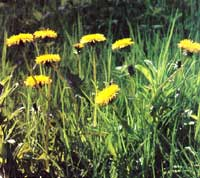
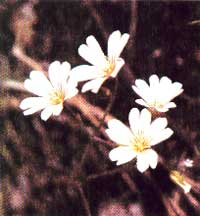
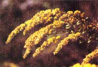

Gardener, hold that hoe!
Those wild volunteers do have their good points.
In 1879, botanist William Beal decided to see how long weed seeds could remain viable. He buried 20 jars, each filled with 1,000 seeds. Then, every five years, he dug up a jar and planted its contents to see which kernels would still sprout. After he died in 1924, colleagues continued the work. In 1979, they watched some 100-year-old seeds germinate.
Add longevity to productivity (some weed plants can produce as many as 40,000 seeds), and you'll realize why, left unchecked, weeds will usually outcompete your garden vegetables for sunlight, nutrients and water. No wonder most gardeners have earned the weeder's merit badges of Calloused Palm and Hoe-er's Hunchback.
But weeds do have their good side. Under controlled circumstances, many of them can greatly benefit our gardens. They hold top-soil, pull up water and nutrients, provide food, help control insects and more.
Then too, we often don't make the association between the beautiful wildflowers that erupt around us from spring through fall and the fact that most of them bloom on otherwise ordinary weeds. We should. To do otherwise would be like admiring butterflies but hating caterpillars.
So yes, for beauty and utility, weeds do have their good points. You'll probably always hack away at ones that crowd your crops. But when you think about all the good they can do, maybe you'll see them with a more benevolent eye, and selectively use those volunteer visitors to your garden's advantage.
When we get cut, a scab forms to protect the injured spot while it's healing. In the same way, weeds bandage the earth- moving in fast wherever there's bare soil. (Any gardener can attest to that!) This is nature's way of ensuring that valuable topsoil won't be washed or blown away. Indeed, weeds have saved incalculable amounts of this precious fertile earth from erosion-and with little thanks from us.
So if you have an idle garden area that's coming up in weeds, consider them a free cover crop. True, if the invader is toxic (like poison ivy), a tough grass (like Johnson grass) or a perennial that spreads by underground runners (like sheep sorrel), you will want to root it out. But why not let nonspreading annuals like spurges, purslane, lamb's-quarters, chickweed and ragweed anchor that fallow ground?
Acid soil: Ox-eye daisy (Chrysanthemum leucanthemum), curly dock (Rumex crispus), sheep sorrel (Rumex acetosella), sow thistle (Sonchus species), prostrate knotweed (Poly-gonum aviculare), lady's-thumb (Polygonum persicaria), wild strawberries (Fragaria species), plantain (Plantago major), rough cinquefoil (Potentilla monspeliensis), silvery cinquefoil (Potentilla argentea), hawkweeds (Hieracium aurantiacum and pratense), knapweeds (Centaurea species).
Alkaline soil: Field peppergrass (Lepidium virginicum), goosefoot (Chenopodium species), gromwell (Lithospermum officinale), true chamomile (Anthemis nobilis), bladder campion (Silene latifolia).
Wet soil: Cattail (Typha latifolia), horsetail (Equisetum arvense), bull sedge (Carex lasiocarpa), lady's-thumb (Polygonum persicaria), joe-pye weed (Eupatorium purpureum), silvery cinquefoil (Potentilla argentea), curly dock (Rumex crispus), mosses, Pennsylvania smartweed (Polygonum pensylvanicum), tall buttercup (Ranunculus acris), creeping buttercup (Ranunculus repens). May apple (Podophyllum peltatum), sheep sorrel (Rumex acetosella), thyme-leafed speedwell (Veronica serpyllifolia), Canada goldenrod (Solidago canadensis), lance-leaved goldenrod (Solidago graminifolia), meadow pink (Lychnis floscuculi), jewelweed (Impatiens pallida), coltsfoot (Tussilago farfara), marsh mallow (Althaea officinalis), sweet flag (Acorus calamus), ground nut (Apios americana).
Dry soil: Virginia pepperweed (Lepidium virginicum), rough cinquefoil (Potentilla monspeliensis), potato vine (Ipomoea pandurata).
Sandy soil: Sandbur (Cenchrus species), dog fennel (Eupatorium capillifolium), cornflower (Centaurea cyanus), yellow toadflax (Linaria vulgaris), small nettle (Urtica urens), arrow-leafed wild lettuce (Lactuca pulchella), maltese thistle (Centaurea melitensis).
Heavy soil: Wild garlic (Allium vineale), dandelion (Taraxacum officinale), broadleaf dock (Rumex obtusifolius), creeping buttercup (Ranunculus repens), plantain (Plantago major).
Poor soil with low humus: Sheep sorrel (Rumex acetosella), dog fennel (Eupatorium capillifolium), broom sedge (Andropogon virginicus), yellow toadflax (Linaria vulgaris).
Soil with a hardpan or hard crust: Horse nettle (Solanum carolinense), pennycress (Thiaspi arvense), quack grass (Agropyron repens), field mustard (Brassica nigra), morning-glory (Ipomoea purpurea), pineapple weed (Matricaria sauveolens).
Previously cultivated soil: Lamb's-quarters (Chenopodium album), plantain (several species), ragweed (Ambrosia artemisiifolia), purslane (Portulaca oleracea), dandelion (Taraxacum officinale), chickweed (Stellaria media), rough pigweed (family Amaranth), carpetweed (Mollugo verticillata).
Rich soil: Chicory (Cichorium intybus), pigweeds (family Amaranth), purslane (Portulaca oleracea), dandelion (Taraxacum officinale), lamb's-quarters (Chenopodium album), burdock (Arctium minus), pokeweed (Phytolacca americana), butter print (Abutilon theophrasti), Queen Anne's lace (Daucus carota).
Just cut the plants down before they go to seed and compost them or-once they've wilted-turn them under into the soil. (If the plants have matured, you can compost them in a pile that heats up to at least 140°F to destroy the weed seed.)
Unlike our pampered produce crops, weeds have had to get by without human-supplied water and fertilizer. Hence, many have learned to send taproots down three, five or even 15 feet in search of their supper.
This serves the gardener in several ways. First, if we compost or turn under those weeds, the valuable nutrients and trace minerals they've brought up will get redistributed to the topsoil.
Weeds can also break up hardpan, that underground layer of compacted soil caused by regular mechanical cultivation. Hardpan keeps salts and other toxins from leaching downward while preventing domestic plants from reaching lower soil nutrients. It can also inhibit good soil drainage. But deep-rooted weeds like dandelions, prickly lettuce, spiny sow thistle, wild amaranths (often called pigweeds), cockleburs, nightshades and Queen Anne's lace can break that soil barrier and blaze a route for domestic roots to follow.
To take advantage of those weeds' soil-probing abilities, don't disturb a fallow area filled with the ground breakers, or leave a deep-reaching weed every 10 or 20 feet among your crops. Over time, this practice will do a great deal to open up your soil.
Weed roots can break a trail to underground water reserves. Moisture from those depths is also wicked upward outside the weed roots by capillary action.
Once upon a time, the year's "Pick of the Crop" vegetable selections would have included purslane and dandelions. Lamb's-quarters would have received the seed catalog praise we now give to tomatoes. Today we neglect such no-effort crops in favor of ones that require hours of toil.
We shouldn't. Some weeds make superior eating. Lamb's-quarters, yellow dock, young dandelion leaves, purslane, chick-weed, land cress and sorrel have two or three times the nutritional value of spinach or Swiss chard. Try these sautéed in garlic and olive oil and drizzled with lemon juice.
Many weeds, either in or just outside your garden, can help control harmful insects or attract beneficial ones. Research in Florida showed that fall armyworm damage was lower in cornfields containing repellent weeds like dandelion, cockleburs and goldenrod. Other studies have proved that milkweeds repel wireworms and that grassy weeds deter many pests.
Some weeds can work as trap crops, luring damaging insects away from valuable vegetables. For instance, lamb's-quarters attract leafminers that might otherwise attack your spinach. And multiflora rose lures Japanese beetles away from garden goodies.
Then, too, several flowering weeds such as Queen Anne's lace, goldenrod, evening primrose, wild mustard, amaranth and dandelion can attract beneficial insects that prey on harmful ones. More research is needed to identify repellent and attractant plants, though. Observe which ones work in your garden (try making crop sprays of some), and you could make an important discovery.
Like a good water dowser, certain weeds can tell you what's going on underground. This can help you when you're shopping for land, choosing a new garden site or trying to improve an existing plot. The list below shows the preferred habitat of some common weeds. But don't assume you've determined the ground conditions just because you've spotted one or two weeds in a category. Look for three or four, and check their health, as well. I've seen lamb's-quarters and sow thistle, both of which love rich soil, growing in a gravel road, but they were doing a bonsai imitation.
Goldenrod prefer wet soil, dandelions like it rich and chickweed go for previously cultivated sites.
|
 M.P.L. FOGDEN/BRUCE COLEMAN. INC |
 TOM BRANCH/PHOTO RESEARCHERS. INC |
 SUSAN SIDES |